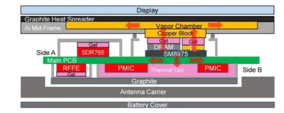
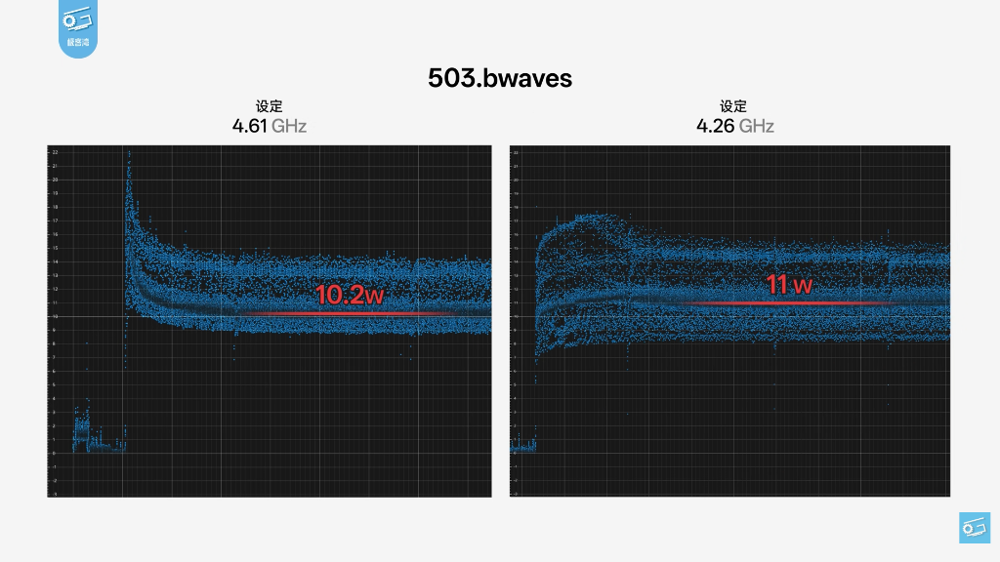
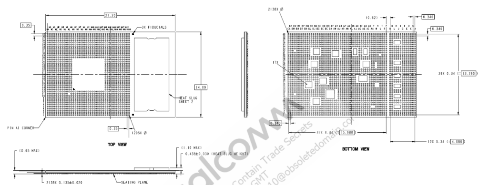
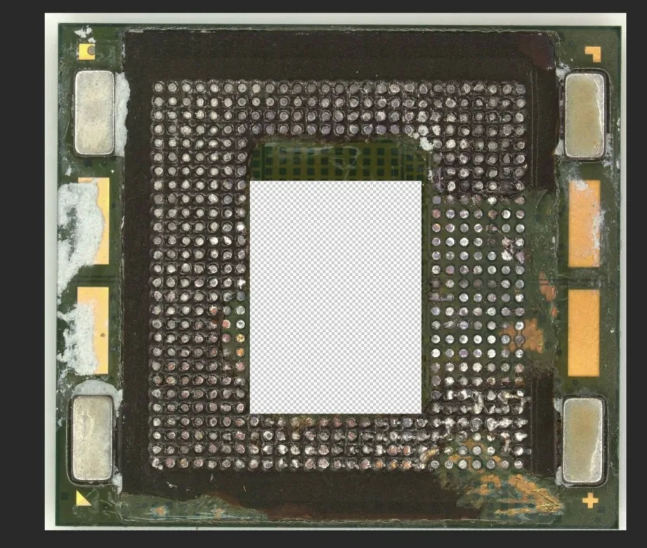

The Benchmark War and the Consequences

The next generation of Snapdragon phone chips show us a major shift in how mobile SoC are packaged. When traditional process node jump aren't good enough for a significant YoY update, manufacturer started to clock their cores at an unreasonable clockspeed, therefore increasing power consumption over the limit of traditional PoP packaging.
The Oryon Gen 3 Power Crisis
The fundamental issue lies in the efficiency curve of the Orion Gen 3. To maintain competitive year-over-year performance gains, Qualcomm is pushing voltages to a breaking point. Data from current high-frequency trends, such as those analyzed by Geekerwan, reveal a terrifying power trajectory for single-core tasks.
At a clock frequency of 4.6 GHz, a single core consumes a massive 22W. Even dropping to 4.26 GHz only brings the draw down to 10.5W. To put this in perspective: 22W is more power than an entire fanless MacBook Air consumes under a full multi-core load. And due to PoP packaging preventing all that heat to be dissipated out, traditional chips encounter an immediate thermal "choke." Peak performance is often lost within seconds as the hardware attempts to prevent permanent damage.

The Dual Choice: SM8950 vs. SM8975
Qualcomm has responded to these thermodynamic realities by bifurcating the Gen 6 lineup. This creates a clear choice for OEMs between standard efficiency and "brute force" peak performance.
The SM8950 (Standard Edition)
The standard SM8950 retains the traditional Stacked PoP (Package-on-Package) layout.
This configuration keeps the DRAM module directly on top of the CPU to save motherboard space. With
a footprint of 14.0 mm x 15.95 mm, it is designed for the 5W continuous power range.
However, because the RAM acts as a thermal blanket, it cannot handle high wattage without thottling.
The SM8975 (Pro/Ultra Edition)
The SM8975 Pro is a radical physical redesign. It utilizes an Offset PoP layout, as
seen on Exynos 2600,
which "moves the furniture" by sliding the RAM to the side of the CPU die. This change exposes the
top of the silicon, allowing for the integration of Heat Pass Block (HPB)
technology. HPB is a direct-to-die copper heat slug that creates a metallic highway for heat to
escape, reducing thermal resistance by 20%. The cost of this cooling is physical
size: the SM8975 is a "Long-Boy" package measuring 21.2 mm in length.

Alternatives?
While the SM8975 uses a copper sledgehammer to chase peak wattage, other designs suggest a more balanced philosophy. The Kirin 9030 Pro handles thermal density without destroying the internal real estate of the motherboard. Instead of the massive Offset PoP layout, the Kirin approach utilizes Peripheral Heat Pass Blocks. These side-mounted copper slugs bridge heat away to the phone frame while keeping the RAM on top of the CPU. This allows the chip to maintain a standard square footprint, preserving space for larger batteries or camera sensors.

The Death of the Small SoC
The Snapdragon 8 Elite Gen 6 series marks the end of the small, unified SoC era. By forcing a choice between the space-efficient SM8950 and the thermally-armored SM8975, Qualcomm is admitting that transistors alone cannot solve the 22W heat problem.
We have reached a point of diminishing returns. When a mobile chip requires a 21.2 mm
footprint and a dedicated copper slug just to sustain a little bit longer in a benchmark run, the
industry has
traded practical engineering for a marketing parlor trick. The question for the next generation of
flagships is no longer how fast they are. Instead, it is a question of how much motherboard space a
manufacturer is willing to sacrifice to keep the silicon from melting.